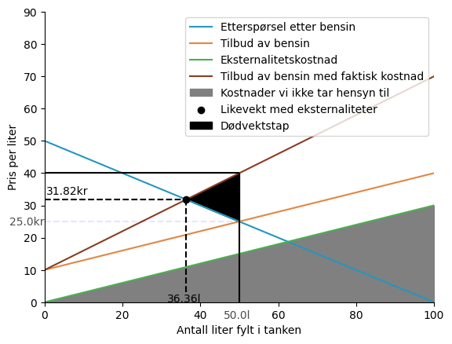
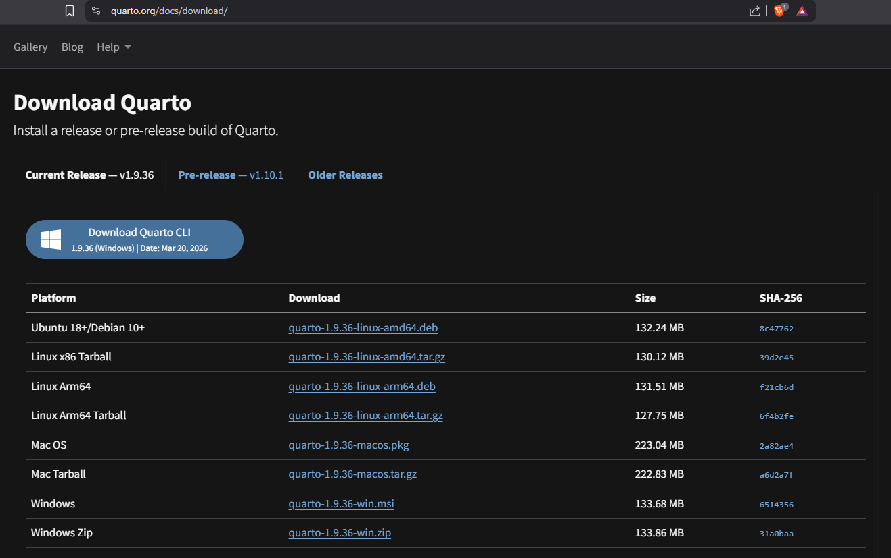
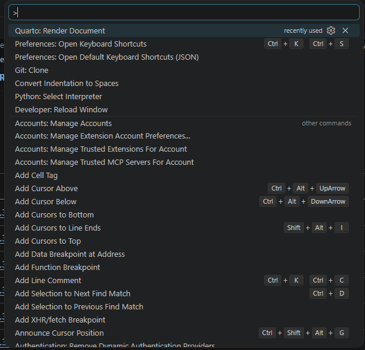
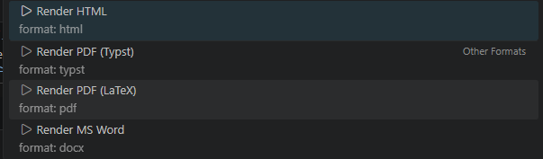

title: “Tittel” echo: false#
Levering arbeidskrav#
Hvordan levere arbeidskravet#
I dette kurset er det et obligatorisk arbeidskrav i form av en skriftlig innleveringsoppgave. Oppgaven kan besvares individuelt eller i grupper på inntil tre studenter. Innleveringsfrist er 17. april 2026. Oppgaven skal ha et omfang på maksimalt 20 sider, og leveres som en PDF-fil i WISEflow.
Dere skal bruke Python som dataverktøy for å tegne figurer og utføre den matematiske analysen. For å levere Python-kode kan dere enten legge ved Jupyter-notatblokken (eller annen kodefil) eller en GitHub-lenke til kodefilen som inneholder både Python-kode og tekst. Husk å merke alle filene med kandidatnummer.
Alle kilder er tillatt, inkludert egne notater, PDF-er fra forelesningene, lærebøker, nettsider, KI-verktøy osv. Det er imidlertid ikke tillatt å gjengi innhold fra KI-verktøy, medstudenter, nettressurser, litteratur eller andre kilder uten korrekt referanse. Dersom KI-verktøy benyttes, er verifisering av KI-generert innhold er obligatorisk. Merk KI-generert tekst med anførselstegn hvis brukt ordrett. Alt KI-generert innhold må verifiseres og kildehenvises i teksten.
Oppsett for innlevering ved bruk av jupyter notebooks.#
I jupyter notatblokker så kan dere velge å lage nye kodeblokker eller det som heter “Markdown”. I de tidligere kapittelene dere har lastet ned så kan dere dobbelklikke på blokker for å se hvordan vi har skrevet disse kapittelene og anbefaler dere å levere arbeidskravet på samme måte. Det vil si at dere skriver teksten i “Markdown” og koden i “python”-kodeblokker.
Da blir det:
Kapittel 1 - Innledning#
Innledning her.
Kapittel 2 - Konsumenters tilpasning i kraftmarkedet#
# Kode for kapittel 2 her
Det kan også skrives in matte som \(1+x = 2\) i tekst, eller så kan du skrive det sentrert med to dollartegn $\( 1 + x = 2 \)$ Ved å trykke på denne teksten i visual studio code så kan dere se hvordan dette er skrevet
Eksempel på figur
import numpy as np
import matplotlib.pyplot as plt
x = np.linspace(0, 10, 100)
y = np.linspace(0, 10, 100)
fig, ax = plt.subplots()
ax.plot(x, y)
ax.set_title('Line Plot');
Kommentar til figuren
Kapittel 3 - En samfunnsøkonomisk analyse det norske kraftmarkedet#
# Kode for kapittel 3 her
# Og bruk flere kodeblokker enn bare en, dette er bare eksempel.
Koden under er fra en figur vist i en muntlig eksamen så denne tar mange snarveier i den. Dere kan prøve å justere denne for oppgaven her når det settes norgespris. Og endringer i helningen på “Demand” kurven ved å sette et høyere tall.
import numpy as np
import sympy as sp
import matplotlib.pyplot as plt
def demand(p):
return 50 - 0.5 * p
def supply(p):
return 10 + 0.3 * p
def eksternaliteter(p):
return 0.3 * p
p = sp.symbols('p')
intersect = float(sp.solve(demand(p) - supply(p), p)[0])
intersect_y = float(demand(intersect))
x = np.linspace(0, 100, 100)
fig, ax = plt.subplots()
ax.plot(x, demand(x), label='Etterspørsel etter bensin ', color="#2596be")
ax.plot(x, supply(x), label='Tilbud av bensin', color="#e28743")
ax.plot(x, eksternaliteter(x), color="#4CAF50", label='Eksternalitetskostnad')
#fillbetween eksternaliteter and x axis
#eksternaliteter added onto supply
ax.plot(x, supply(x) + eksternaliteter(x), color="#873e23", label='Tilbud av bensin med faktisk kostnad')
ax.fill_between(x, eksternaliteter(x), color='gray', label='Kostnader vi ikke tar hensyn til')
#new intersect
intersect_new = float(sp.solve(demand(p) - (supply(p) + eksternaliteter(p)), p)[0])
intersect_y_new = float(supply(intersect) + eksternaliteter(intersect))
intersect_med_eksternaliteter = float(supply(intersect_new) + eksternaliteter(intersect_new))
ax.scatter(intersect_new, intersect_med_eksternaliteter, color='black', label='Likevekt med eksternaliteter', zorder=5)
fillbetweenarea = np.linspace(intersect_new, intersect, 100)
ax.fill_between(fillbetweenarea, supply(fillbetweenarea) + eksternaliteter(fillbetweenarea), demand(fillbetweenarea), color='black', label='Dødvektstap')
ax.vlines(intersect, 0, intersect_y, linestyles='dashed', alpha=0.1, color="blue")
ax.hlines(intersect_y, 0, intersect, linestyles='dashed', alpha=0.1, color="blue")
ax.vlines(intersect, 0, intersect_y_new, linestyles='solid', color="black")
ax.hlines(intersect_y_new, 0, intersect, linestyles='solid', color="black")
ax.text(intersect-4, -5, f'{round(intersect,2)}l', alpha=0.7)
ax.text(-9, intersect_y-1, f'{round(intersect_y,2)}kr', alpha=0.7)
ax.vlines(intersect_new, 3, float(supply(intersect_new) + eksternaliteter(intersect_new)), linestyles='dashed', color='black')
ax.text(intersect_new-5, 0, f'{round(intersect_new,2)}l', color='black')
ax.hlines(float(supply(intersect_new) + eksternaliteter(intersect_new)), 0, intersect_new, linestyles='dashed', color='black')
ax.text(0.5, float(supply(intersect_new) + eksternaliteter(intersect_new))+1.5, f'{round(float(supply(intersect_new) + eksternaliteter(intersect_new)),2)}kr', color='black')
ax.set_ylim(0, 90)
ax.set_xlim(0, 100)
ax.set_xlabel('Antall liter fylt i tanken')
ax.set_ylabel('Pris per liter')
ax.spines['top'].set_visible(False)
ax.spines['right'].set_visible(False)
ax.legend(loc='upper right')
plt.savefig('dødvektstap4.png', bbox_inches='tight', dpi=300, transparent=True)

Kapittel 4 - Konklusjon#
Konklusjon her.
Konvertering av jupyterfil til PDF (Anbefales).#
I Visual Studio Code, først klikk på “Extensions” i venstre sidepanel og søk etter “Quarto”. Installer “Quarto” utvidelsen.
Mens dere installerer extension, får dere beskjed om å gå til Quarto sin nettside for å laste ned og installere Quarto på datamaskinen deres. Følg instruksjonene på nettsiden for å fullføre installasjonen.

Lagre dokumentene dine i VScode, så må man restarte VScode for at Quarto skal fungere. Etter at du har startet VScode på nytt, åpne jupyterfilen du ønsker å konvertere til PDF. Klikk på “Visual Studio Code” knappen i topplinjen i VScode. Velg “Show and run commands > Quarto: Render document” fra menyen som dukker opp.

Velg Render to PDF Latex, og vent til renderingen er ferdig. Etter at renderingen er ferdig, vil du finne PDF-filen i samme mappe som jupyterfilen din. Og dobbelsjekk at PDF-filen ser ut som du ønsker før du leverer den i WISEflow.

Dere må da inkludere både en fil med kode som ved å legge til .ipynb filen som vedlegg når dere leverer. Dere må passe på at denne koden kan kjøres slik at vi kan vurdere den